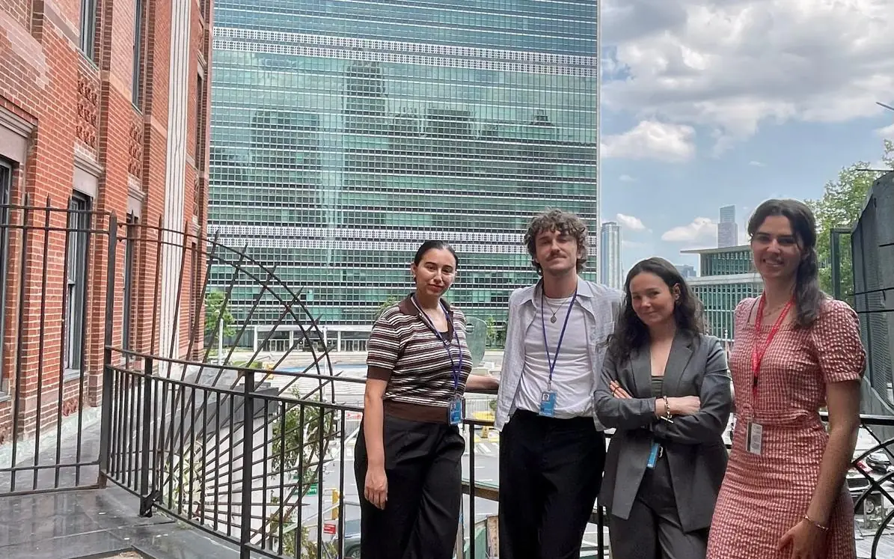
New York
Junior Impact Maker™
A season at the heart of global diplomacy: classes, observation of UN sessions and a research project linked to the SDGs.
from €2,000
See the programme
ICC is a systems integrator: we connect expertise, people, funding and places to turn complexity into regenerative impact.
Our vision
The great challenges of our time lack neither ideas nor talent. They lack connections.
Inspired Change Corporate is not a traditional consultancy. We are a transformation platform that creates interactions to shape innovative futures, based on a systemic, integral and regenerative approach.
Building Systemic Impact · 6 levels, from singularity to impact
Every individual, every organisation and every place has its own singularity. Transformation does not start with a solution: it starts with awareness.
That singularity becomes a strength when it is supported by conscious leadership.
From that awareness emerge a vision, a strategy and a capacity to innovate. But the best strategies only come to life when they find the resources to unfold.
When resources connect with needs, collaboration takes on a new dimension: philanthropy, investment, public and private partnerships, research, foundations and international institutions serving one shared vision. Cooperation becomes systemic.
Systems can then regenerate: human, social, economic and environmental, with a long-term view.
And regeneration produces lasting impact, for regions and for the living world.
This method is not just a model. It is ICC’s DNA.
What we do
We work on the two inseparable dimensions of any lasting transformation: people and organisations.
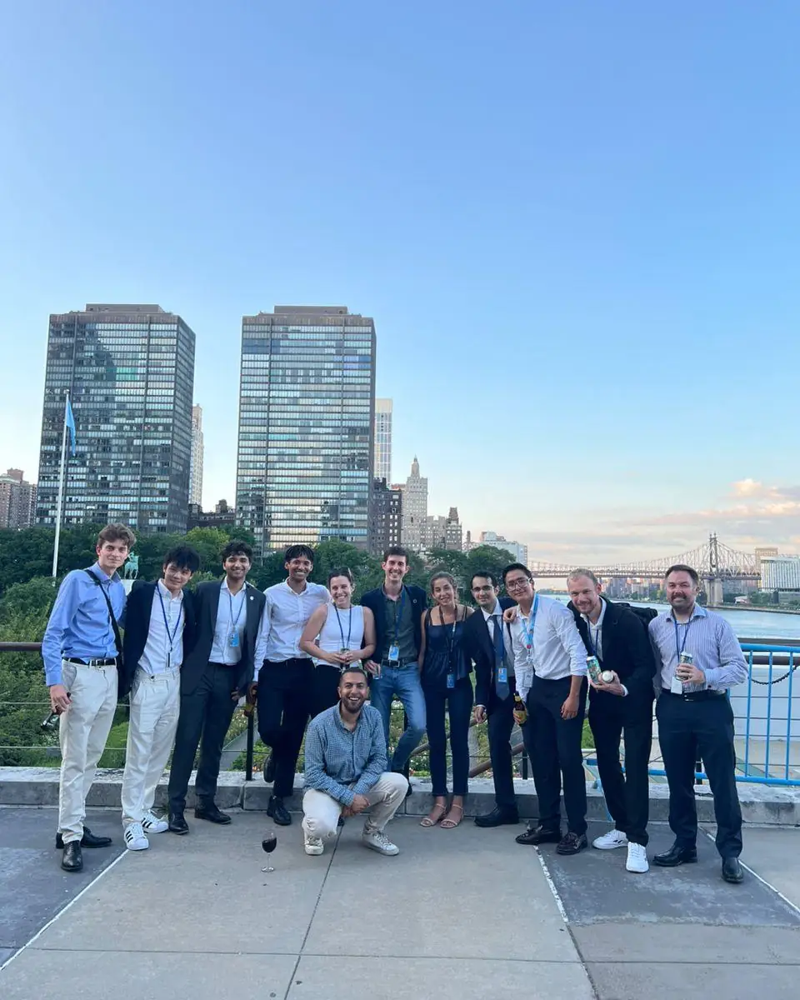
People
Immersive learning experiences that combine international fieldwork, strategic reflection and individual and collective skills.
See the programmesOrganisations
Supporting leaders, companies, institutions and local authorities as they design and roll out their transformation strategies.
Discover advisoryBecause the deepest changes happen when inner transformation meets collective action.
Immersive programmes
Prices taken from ICC’s current website and brochures. VAT treatment, payment and funding terms to be confirmed by ICC.
Calendar
Inspire Change programmes take place in summer, between Montreux and New York. 2027 dates are still to be confirmed by ICC.
Junior Impact Maker 2027: indicative application deadline, European applicants
Around 1 March 2027, three months before a June start: date to be confirmed by ICC. Outside the EU: apply at least 6 months before the programme starts, to allow for the visa.
The indicative deadline has passed: contact ICC.
The places
Ruffey-sur-Seille, Jura
ICC head office
46.74° N · 5.50° E
Montreux, Switzerland
IDG short course, one week in July
46.43° N · 6.91° E
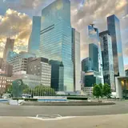
New York
Around the United Nations: Junior Impact Maker and SDG short course
40.75° N · 73.97° W
Partners and supporters
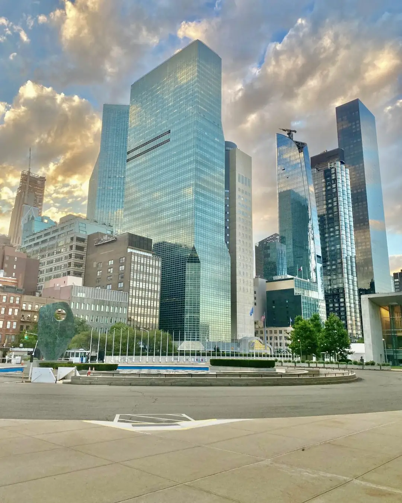
« Le programme Inspire Change m’a été extrêmement bénéfique. Il m’a permis de comprendre le fonctionnement des Nations-Unies en pratique, de rencontrer et échanger avec des haut-fonctionnaires. […] Je recommande ce programme à tout étudiant autonome qui souhaite enrichir son réseau professionnel. »
Chloé MoullecSummer 2023 · Work-study with DS Avocats
Quote in French. Translation: “The Inspire Change programme was extremely beneficial to me. It helped me understand how the United Nations works in practice, and to meet and talk with senior officials. […] I recommend this programme to any independent student who wants to grow their professional network.”
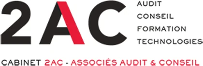
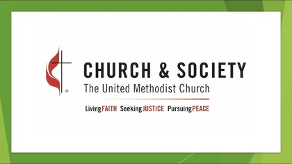
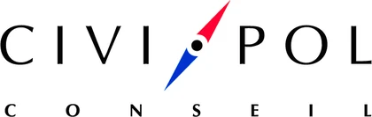
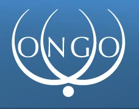
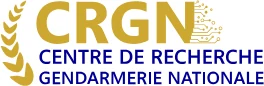
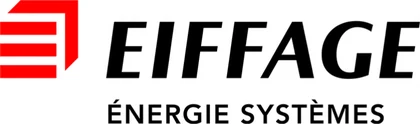
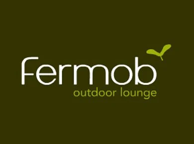
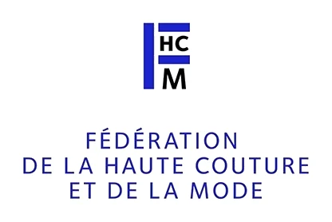
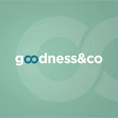
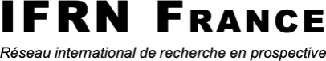
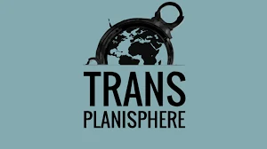
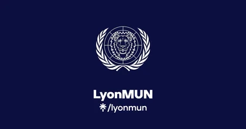
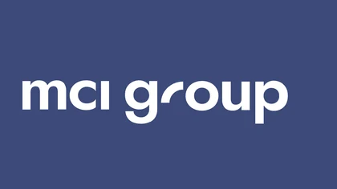
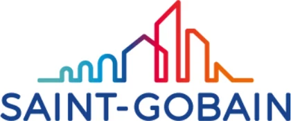
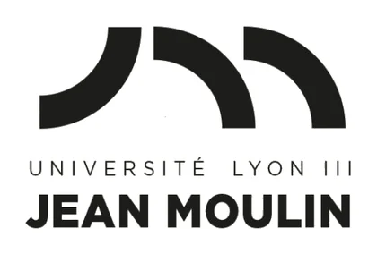
The ICC team
Bringing together talent and influence to inspire change.
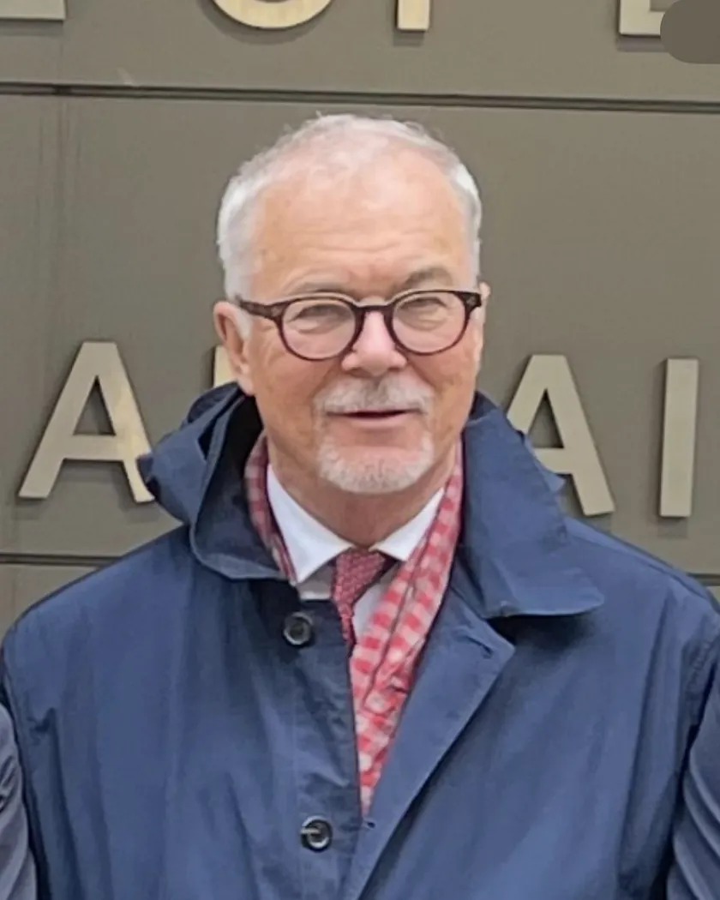
Strategy
Management
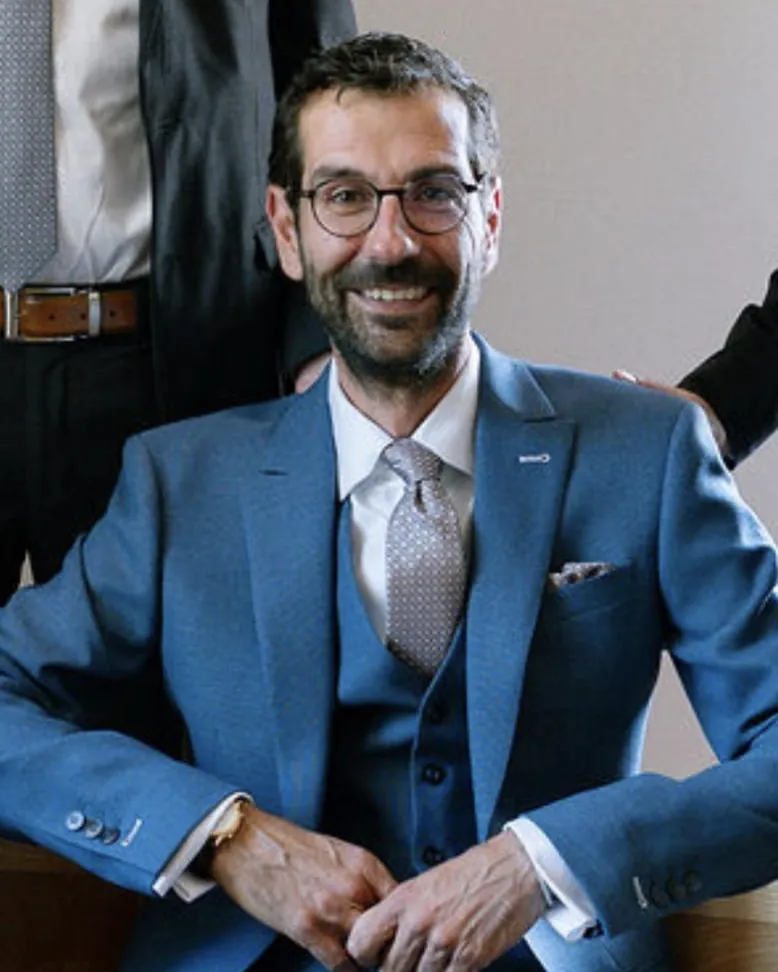
Operations
Research
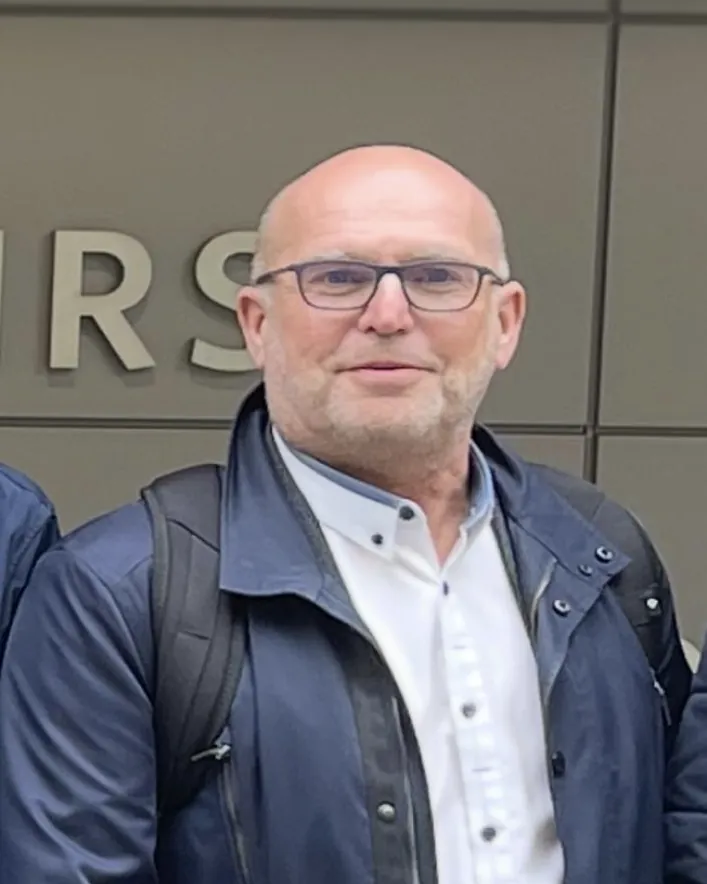
Finance
Contact
Be the change today.